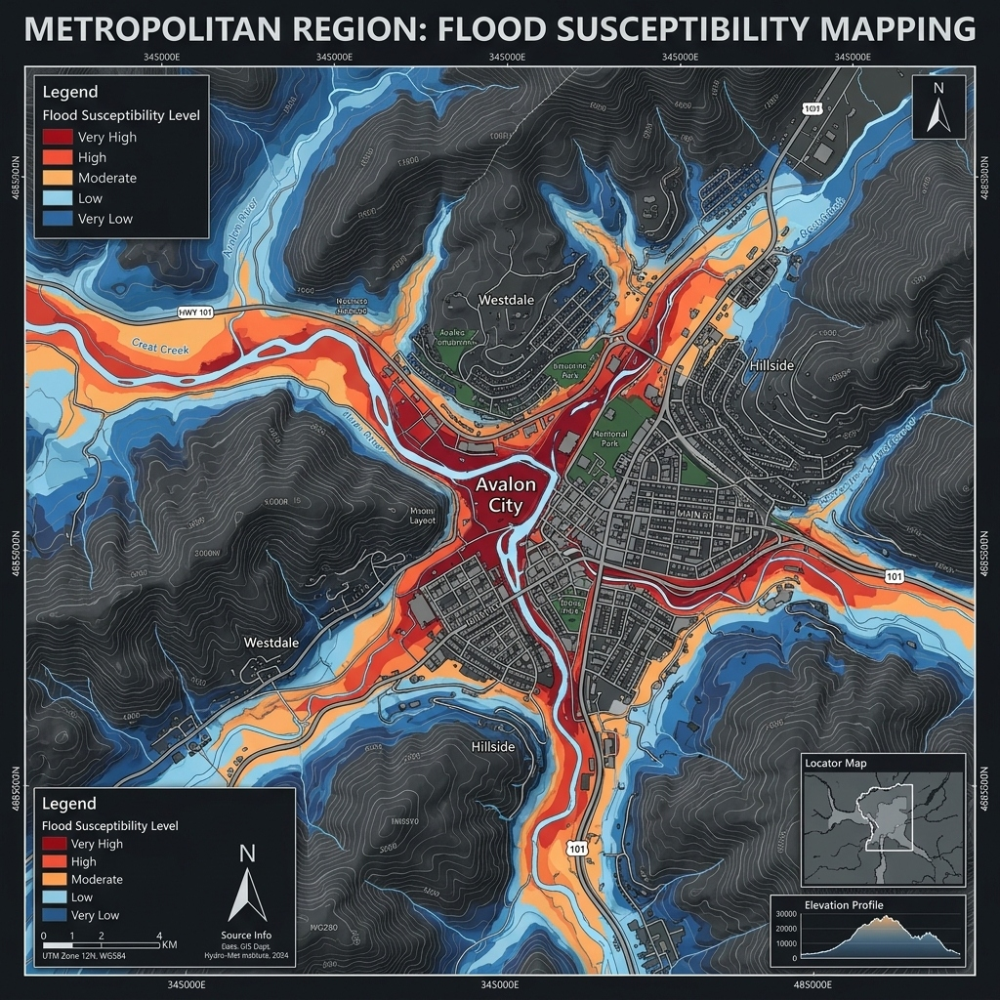
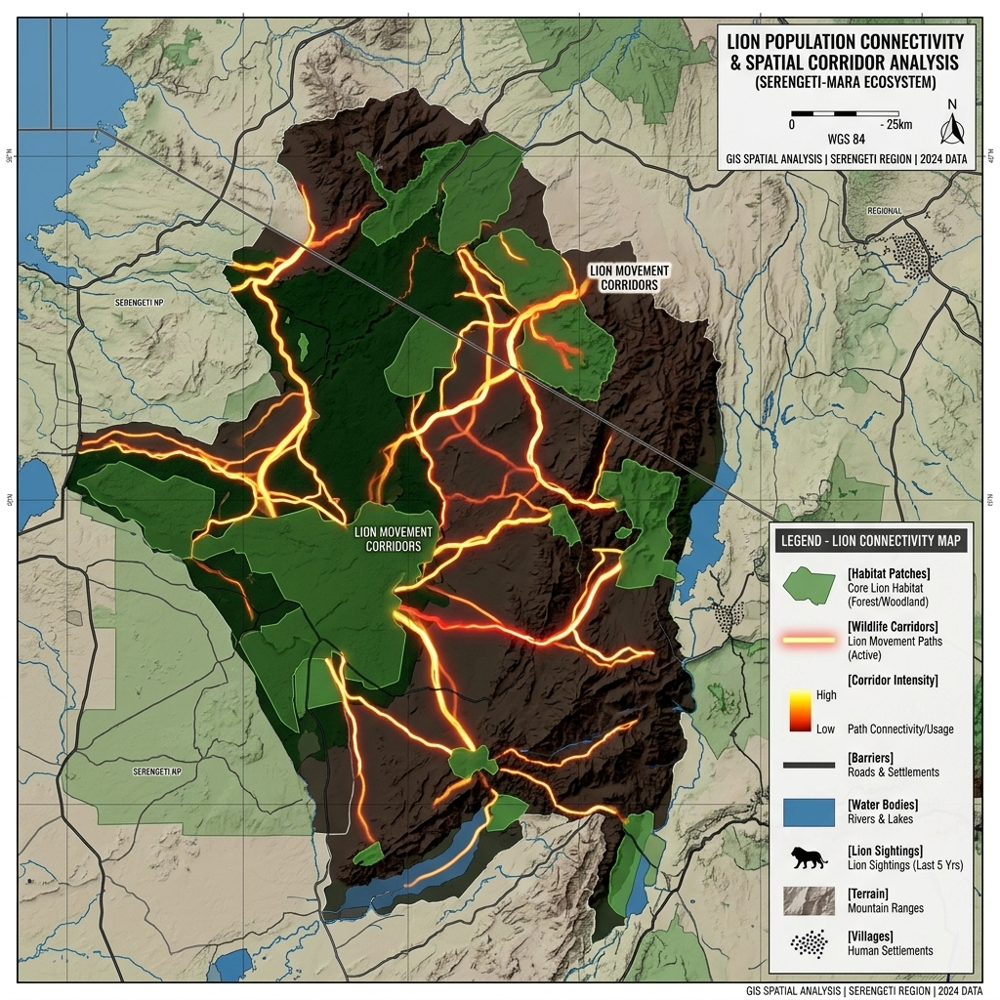
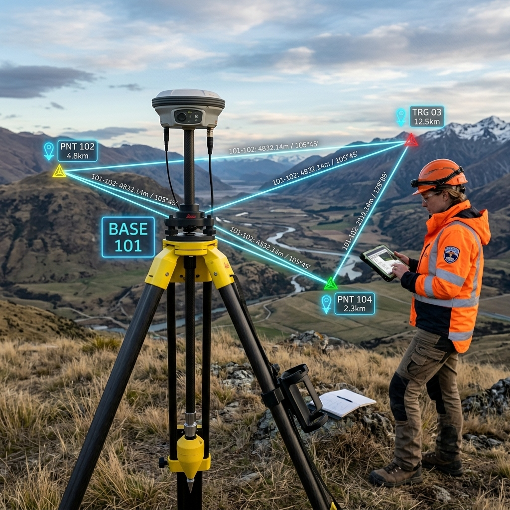

My Projects
Showcasing academic and personal work in Geomatics

Flood Susceptibility Mapping
GIS-based flood susceptibility mapping using MCDA and Sensitivity Analysis to identify high-risk zones.


